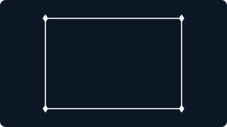

The Singularity Workshop · implementation trail
From your API to a living SVG
The animation is not the proof by itself. This page pairs the SVG emitted by the C# proof backend with the code path that submits real geometry through the Visualizer contracts. The colors identify the handoff: scene data, API consumption, and backend-specific SVG presentation.
1 · Contract + scene data
2 · Visualizer API consumption
3 · SVG-only presentation effect
Output · C# Visualizer → SVG proof backend

The connected geometry is built from Visualizer resources and draw commands. The moving dot and dashed trace are an SVG presentation overlay; they are not an FSM update loop.
Code · follow the colored handoff
// 1 · Create the actual Visualizer scene resources.catalog.SetGeometry(pointId, PointMesh());catalog.SetGeometry(lineId, LineMesh());catalog.SetMaterial(materialId, new VisualizerMaterial(1, Vector4.One));var frame = new VisualizerFrame(DefaultView(), commands);// 2 · Consume the public Visualizer API.await using var visualizer = new Visualizer( new SvgProofBackend(path, title, animateConnectedPoints: true), catalog);var result = await visualizer.RenderAsync(frame);// 3 · The selected SVG backend adds presentation-only motion.sb.Append("<path id=\"connected-route\" ...>") .Append("<animate attributeName=\"stroke-dashoffset\" .../></path>") .Append("<circle ...><animateMotion .../></circle>");Evidence boundary: the geometry path consumes Visualizer contracts; the motion path is specific to the SVG proof backend. This is a real backend output, not a claim that GUI.SVG is already integrated or that an FSM is currently driving the animation.